A secure, searchable directory of our partner agents and their contacts — with controlled access for staff and simple tools for the administrator.
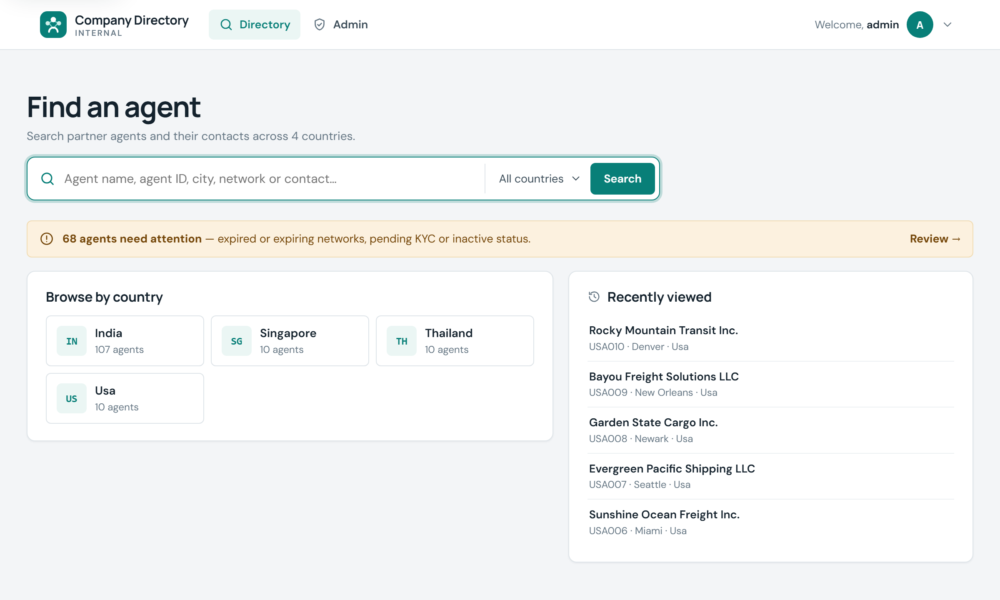
What the system is, who uses it, and why it exists.
What it does for staff and for the administrator.
Real screenshots of the running application.
User journeys, architecture, data and security.
What has been built, and where it stands today.
Roadmap options, business impact and summary.
All figures come from the project itself: source code, a database snapshot of 25 Sep 2026, the version history and the live site. Items that could not be checked are marked Not verified.
An internal web application that holds our overseas partner agents (freight forwarders) by country, with their contacts, network memberships, status and assigned sales reps.
Staff who need to find and contact agents. Each account sees only the countries, companies and sales columns granted to it.
An administrator, who loads country workbooks from Excel, manages user accounts and access, and monitors data quality.
Live Running on PythonAnywhere with automatic deployment from GitHub.
Database snapshot, 25 Sep 2026. The live database may differ.
The system imports one Excel workbook per country. The problems below are the ones its features are built to solve.
Each country's agents sit in a separate workbook, so finding "an agent in Chennai on WCA" means opening and searching several files.
A shared workbook exposes every column to everyone — including which rep from which of our brands handles each agent.
Expired network memberships, pending KYC and inactive agents must be spotted by reading dates and statuses row by row.
Missing emails and phones, shared addresses and unreadable dates are hard to see across hundreds of rows.
Replacing a country's data by hand can silently drop or duplicate companies, with no record of who changed what.
Once the agent is found, the right contact's email or phone still has to be located and copied from another sheet or cell.
Excel files per country, shared as whole files, checked by hand.
The administrator loads a workbook; the system shows what will change and backs up the database first.
Search across countries, see status at a glance, open a company and contact the right person.
Less searching, access limited to what each person needs, problems surfaced automatically.
| Feature | What it does | Who | Business benefit |
|---|---|---|---|
| Directory search | One box searches agent name, agent ID, city, state, country, network and contact name, role, email and phone. Exact agent-ID matches come first. | All users | Answers "who can we use in…?" in seconds. |
| Country filter & browsing | Narrow any search to a country, or browse a country's agents from the start page. | All users | Fast lane-by-lane lookup. |
| Status at a glance | Agent status, KYC and network expiry shown on every result and company page, e.g. Active KYC Pending. | All users | Avoids working with agents that are inactive or out of network. |
| Company profile | Key facts, contacts table with one-click copy and tap-to-call, and every workbook column grouped into sections. | All users | Everything about an agent on one page. |
| Recently viewed | Start page lists the agents a person opened recently (kept in their own browser). | All users | Quick return to ongoing work. |
| Self-service password | Users change their own password; other devices are signed out. | All users | Fewer requests to the administrator. |
Real screenshots of the current version. To protect partner contact details, the directory screens show the sample records (Singapore, Thailand, USA) included with the project.
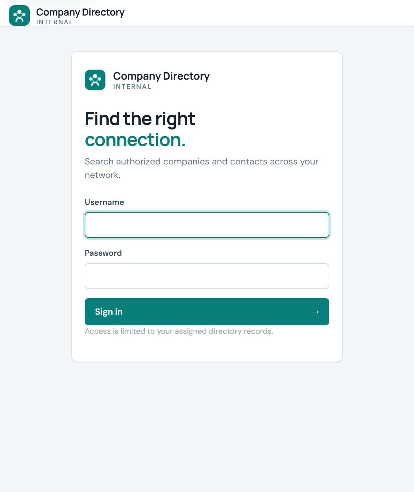
Sign in. Personal accounts only; repeated wrong passwords are blocked for 15 minutes.
Start page. Search, country tiles with agent counts (only granted countries for restricted users), recently viewed agents, and — for admins — how many agents need attention.
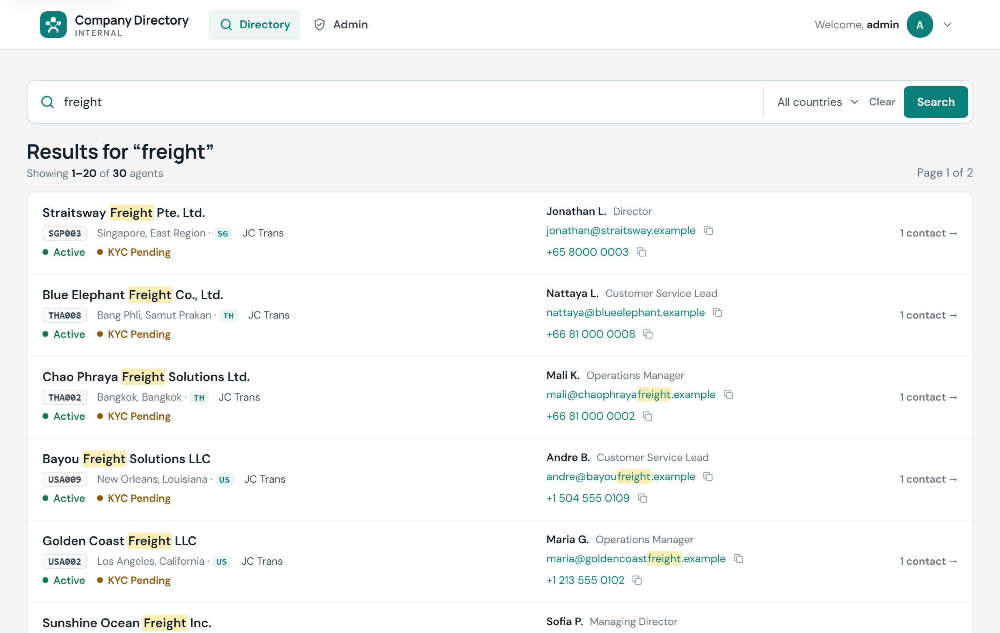
Search for “freight”; sample records shown.
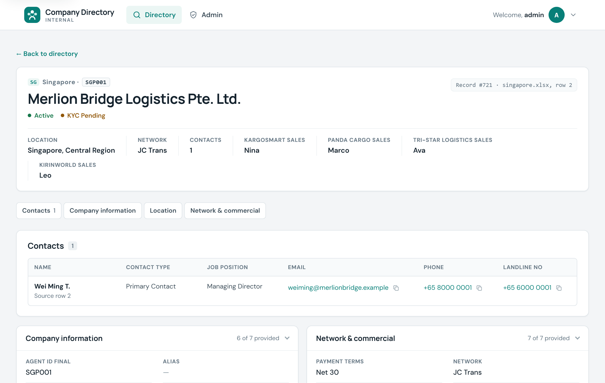
Sample record from singapore.xlsx.
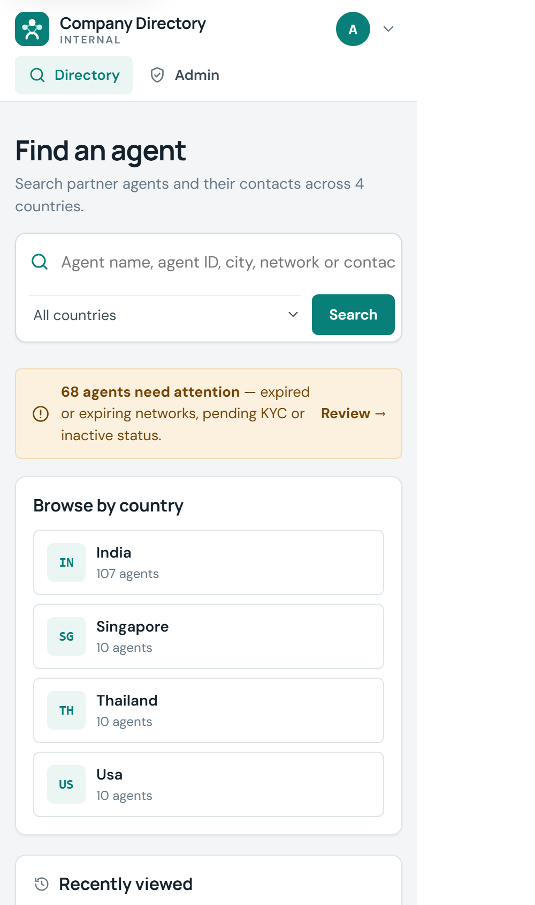
Start page
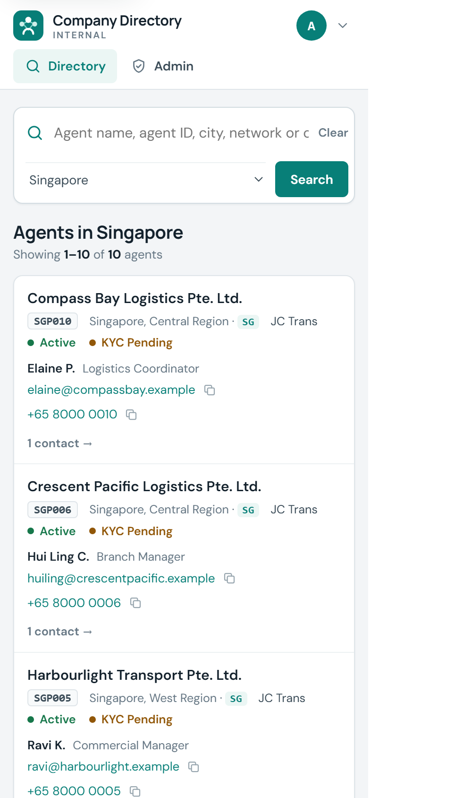
Search results
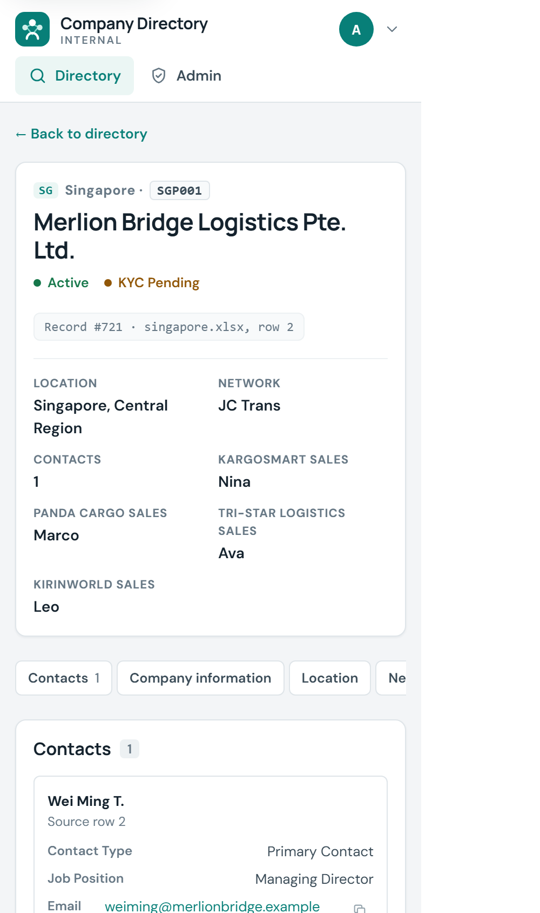
Company profile
The same application adapts to small screens: rows stack, tables become cards with labelled values, and phone numbers can be tapped to call — useful for staff away from their desk.
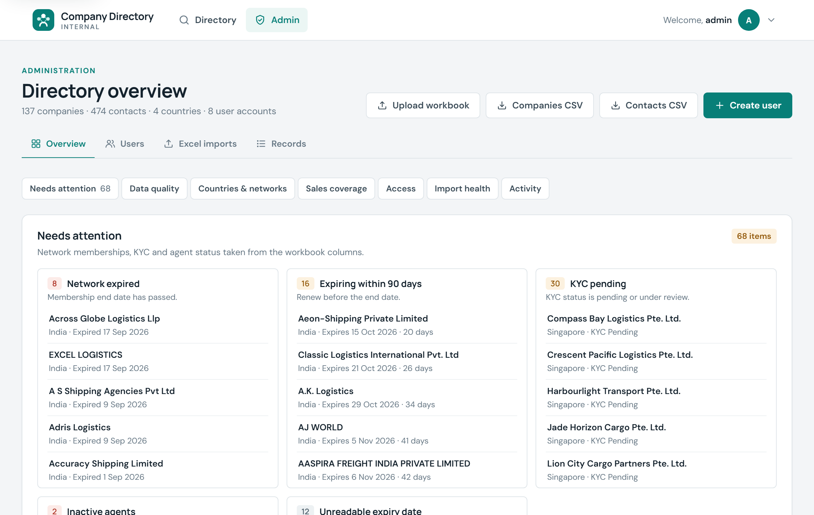
On 25 Sep 2026 the overview listed 68 items needing attention:
| Network expired | 8 |
| Expiring within 90 days | 16 |
| KYC pending | 30 |
| Inactive agents | 2 |
| Unreadable expiry date | 12 |
Each entry links to the company. All 30 KYC-pending entries are the sample records; the real India data accounts for the other 38.
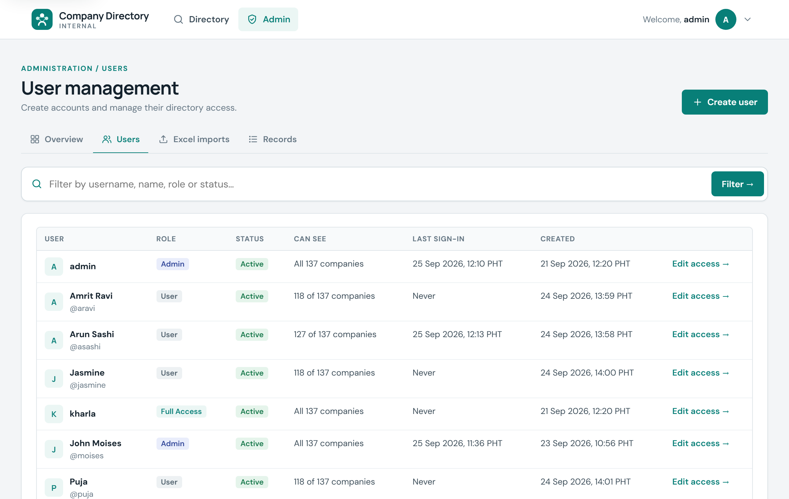
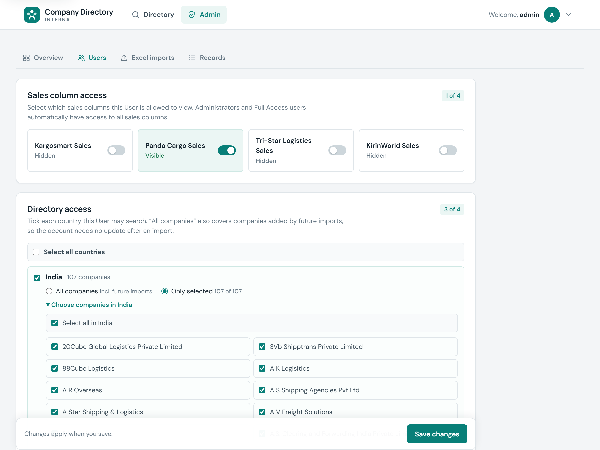
This account has all 107 India companies ticked one by one; switching India to “All companies” would also cover future imports.
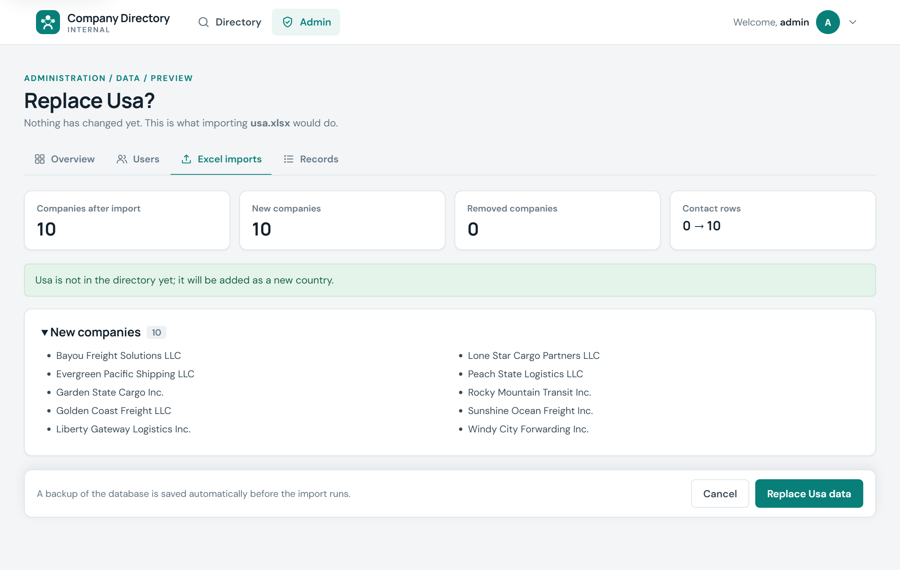
Preview of usa.xlsx in an environment where USA was not yet loaded.
Staff member — find an agent for a shipment
Personal account; sees only granted countries.
"Chennai", "WCA", an agent ID — or pick a country.
Active? KYC complete? Network valid?
Contacts, network, assigned reps.
Click to email, tap to call, or copy.
Administrator — update a country's data
Or pick one included with the project.
New, removed, skipped rows; users who would miss new companies.
Backup taken automatically, then the country is replaced.
Needs attention, data quality, import health.
Only if needed — "All companies" grants update themselves.
| Task | With spreadsheets only | With Company Directory |
|---|---|---|
| Share agent data | Send whole files; everyone sees every column | Grant countries, companies and sales columns per person; enforced by the server |
| Update a country | Overwrite a file; no view of what changed | Preview the difference, automatic backup, one-click confirm, history kept |
| New agents added | Re-share updated files with each person | "All companies" grants include new agents automatically; preview names anyone who would miss them |
| Spot problems | Read dates and statuses row by row | Overview lists expired / expiring networks, KYC pending, inactive agents and data gaps |
| Password resets | — | Users change their own; admin can reset and it signs out old sessions |
| Know who changed what | No record | Admin actions, imports and sign-in failures recorded; shown on the overview |
The "spreadsheets only" column describes working from the per-country workbooks the system imports; it is not a measured baseline.
| Layer | Technology (verified) |
|---|---|
| Screens | Server-rendered HTML (Jinja2 templates), one stylesheet, small vanilla JavaScript; Google Fonts |
| Application | Python 3 · Flask 3 · Flask-WTF (form protection) · Werkzeug (password hashing) |
| Excel | openpyxl — reads .xlsx workbooks |
| Data | SQLite database (single file) |
| Hosting | PythonAnywhere (plan tier: Not verified) |
| Delivery | Git + GitHub; signed webhook pulls and reloads on every push to main |
| Quality | Automated test script — 209 checks |
Besides the main fields, each company and contact stores its full original row, so new workbook columns appear on the profile without programming.
Grants link user accounts to countries and companies; the database answers only with rows a user may see.
Passwords are stored only as one-way hashes. No credentials or keys are shown in this document.
Page timings were measured on a laptop against a copy of the database; live response times on the host are Not verified.
Dates for versions 1–7 are not recorded (they predate version control) and are Not verified; the first user accounts in the database were created on 21 Sep 2026. Versions 8–9 and the pipeline are dated from the Git history.
| Improvement | Business value | Who benefits | Complexity | Phase |
|---|---|---|---|---|
| Security & operations basics | Force HTTPS, daily backup with off-site copy, tests before deploy | Company · administrator | Low | Next |
| Data clean-up workflow | Work through the 12 unreadable expiry dates, 22 contacts without email and 249 without phone the overview already lists | Staff get reliable contacts | Low–Medium | Next |
| "My agents" by sales rep | Each brand's rep sees the agents assigned to them (data already in the sales columns) | Sales staff | Medium | Later |
| Quick corrections in the app | Fix a phone or email without re-importing a whole country | Administrator | Medium | Later |
| Searchable audit history | Who changed access or data, and when, kept in the database | Management · administrator | Medium | Later |
| Expiry reminders | Alert before network memberships lapse (depends on hosting plan allowing email — Not verified) | Administrator · sales | Medium | Later |
| Company sign-in (single sign-on) | Staff use their existing work accounts; no separate passwords | All staff · IT | Medium–High | Future |
One search across all countries replaces opening several workbooks; contacts can be emailed, called or copied directly.
Each person sees only what they need; commercial columns stay with the people entitled to them.
Status on every result; on the snapshot date the overview surfaced 38 attention items in the real India data (expired or expiring networks, inactive agents, unreadable dates).
Imports are previewed and backed up; "All companies" access removes re-granting after every import; users reset their own passwords.
New countries are added by uploading a workbook — no code change; new columns appear automatically.
Small, standard technology; changes go live automatically after a push; 209 automated checks guard behaviour.
Benefits are qualitative. No time or cost savings have been measured, so none are claimed.
What we built
A secure internal directory of our partner agents and their contacts, live on the web.
Why
Agent information was spread across country workbooks, shared all-or-nothing, and checked by hand.
What it provides
Cross-country search with status, contacts-first profiles, per-person access, safe imports and an oversight dashboard.
Accomplished
137 companies and 474 contacts loaded; 8 accounts; automatic deployment; 209 automated checks.
Next
Force HTTPS and scheduled backups, clean up the data gaps the system found, then rep-focused views and in-app corrections.
Direction
Grow from a reliable lookup tool into the day-to-day hub for agent information across all countries.
Decision points: approve the "Next" roadmap items, and confirm which countries' real workbooks should replace the sample data.